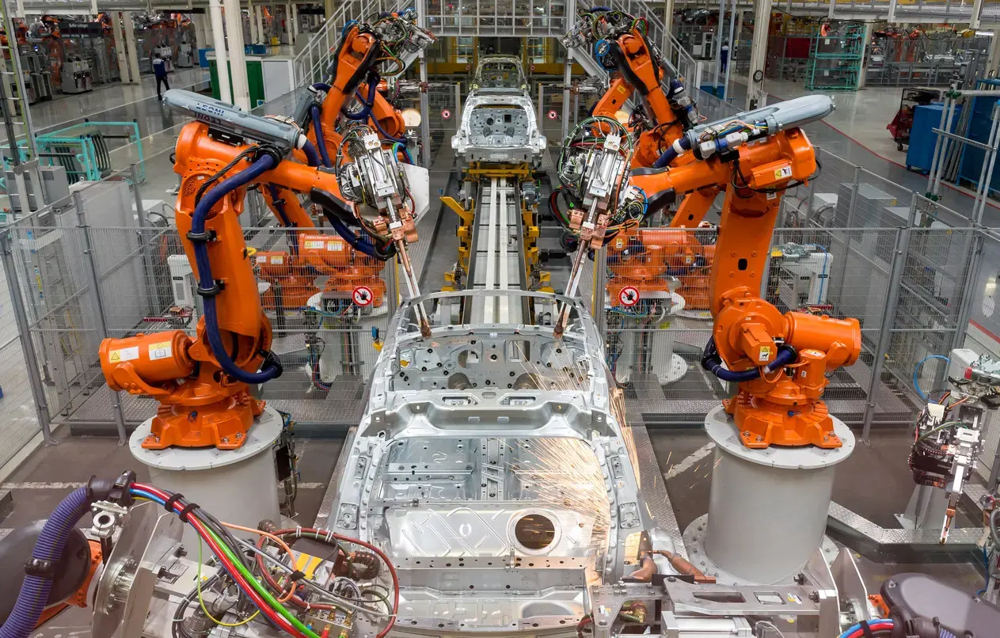

Jordy Hoebergen - Stage VDL
In het kort
In het laatste leerjaar van de opleiding Expert IT systems & devices heb ik mijn eind stage gedaan bij VDL Nederland.
Tijdens mijn stage ben ik werkzaam geweest op de afdeling Werkplekbeheer. Mijn werkzaamheden bestonden uit het oplossen van 2e-lijns tickets, het klaarmaken van laptops en computers voor gebruikers en het oplossen van hard- en software problemen.

Stage opdrachten
Tijdens deze stage ben ik niet alleen werkzaam geweest op de afdeling werkplekbeheer. Ook heb ik enkele examen opdrachten gemaakt voor school, deze opdrachten bestonden uit diverse dingen zoals bijvoorbeeld het configureren van netwerk apparatuur, of het configureren en documenteren van bepaalde software.
De laatste weken van mijn stage ben ik bezig geweest met netwerk gerelateerde opdrachten. Zo heb ik switches geconfigureerd en vervangen bij een VDL bedrijf. Deze opdracht sloot perfect aan bij mijn opleiding door de gegeven Cisco lessen op school.

Uitrol Moderne Werkplek
Tijdens de stage heb ik ook meegeholpen met de uitrol van de Moderne Werkplek (Microsoft 365) op het hoofdkantoor.
Samen met een collega waren wij het eerste aanspreekpunt voor de gebruikers. Zo heb ik gebruikers geholpen met het veilig opslaan van hun gegevens in OneDrive en heb ik geholpen met eventuele problemen die ontstonden, denk aan een gefaalde update, of een onduidelijke installatiestap.
Maar ook heb ik nieuwe laptops toegevoegd in Intune Autopilot en deze apparaten gebruiksklaar gemaakt voor gebruikers. Hierdoor heb ik meer geleerd over Intune, Azure Active Directory (Entra) en Autopilot. Tijdens mijn opleiding heb ik vooral gewerkt met Azure AD, Exchange Online en Sharepoint. Dit was dus een fijne toevoeging aan mijn kennis.